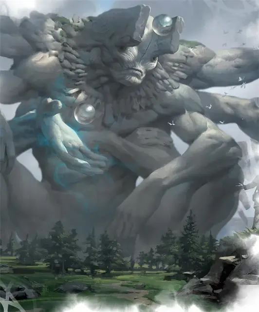

Древний
Archaic
Громадный Небожитель, нейтральный

Класс Доспеха 20 (природный доспех)
Хиты 245 (14к20 + 98)
Скорость 40 футов
| мод | спас | ||
|---|---|---|---|
| СИЛ | 25 | +7 | +7 |
| ЛОВ | 10 | +0 | +6 |
| ТЕЛ | 24 | +7 | +7 |
| мод | спас | ||
|---|---|---|---|
| ИНТ | 27 | +8 | +14 |
| МДР | 24 | +7 | +13 |
| ХАР | 20 | +5 | +11 |
Навыки Восприятие +13, История +20, Магия +20, Обман +11
Сопротивление урону силовое поле
Иммунитет к урону психическая энергия, яд
Иммунитет к состояниям испуг, истощение, окаменение, отравление, очарование, ошеломление, паралич
Чувства истинное зрение 120 футов, пассивное Восприятие 23
Языки Все
Опасность 18 (20000 опыта)
Бонус мастерства +6
Особенности
Таинственный разум. Мысли древнего нельзя прочитать, а существа могут телепатически общаться с древним, только если он позволяет и магия не может определить, лжет ли древний.
Легендарное сопротивление (3/день). Если древний проваливает спасбросок, он может вместо этого сделать спасбросок успешным.
Необычная природа. Древний не нуждается в воздухе, еде, питье или сне.
Действия
Мультиатака. Древний совершает две атаки Силовым ударом. Он также может использовать Изменение гравитации, если оно доступно.
Силовой удар. . Рукопашная или Дальнобойная атака заклинанием: +14 к попаданию, досягаемость 15 футов или дистанция 120 футов, одна цель. Попадание: 19 (2к10 + 8) урона силовым полем и цель подтягивается на 10 футов к древнему или отталкивается на 10 футов от него, по выбору древнего.
Изменение гравитации (Перезарядка 5-6). Древний меняет гравитацию на противоположную для одного существа, которое он может видеть в пределах 100 футов. Существо должно преуспеть в спасброске Мудрости Сл 22, иначе упадёт на 100 футов вверх. Если падающее существо при этом падении сталкивается с твёрдым предметом (например с потолком), оно ударяется об этот предмет точно так же, как это было бы падало вниз. Если существо достигает максимально высоты, ни во что не ударяясь, оно зависает там до начала следующего хода древнего, после чего гравитация возвращается к норме, и существо падает.
Использование заклинаний. Древний накладывает одно из следующих заклинаний, используя Интеллект в качестве базовой характеристики и без использования материальных компонентов (Сл спасброска от заклинаний 22):
• Неограниченно: обнаружение магии [detect magic], предсказание [divination], послание [sending];
• 1/день каждое: изгнание [banishment], узилище [forcecage].
Телепортация. Древний телепортируется в свободное пространство, которое он может видеть в пределах 120 футов.
Реакции
Копирование заклинания (1/день). Сразу после того, как существо видимое древним, накладывает заклинание 5-го уровня или ниже, это существо должно преуспеть в спасброске Харизмы Сл 22, иначе древний немедленно накладывает то же заклинание того же уровня (+14 к попаданию атаками заклинания, Сл спасброска от заклинаний 22), не требующее никаких материальных компонентов и он выбирает цели заклинания.
Легендарные действия
Древний может совершать 3 легендарных действия, выбирая из указанных ниже вариантов. Лишь одно легендарное действие может быть совершено за раз, и только в конце хода другого существа. Древний восстанавливает истраченные действия в начале своего хода.
Удар. Древний совершает одну атаку Силовым ударом.
Телепортация. Древний использует Телепортацию.
Расшифровка магии (Стоит 2 действия). Древний нацеливается на одно существо, которое он может видеть в пределах 120 футов. Цель должна преуспеть в спасброске Телосложения Сл 22, иначе получит 35 (10к6) урона силовым полем и каждое заклинание 5-го уровня или ниже на цели заканчивается.
Описание
Древние - это высокие, многорукие существа, переполненные магией. Несмотря на свое одиночество, древние обладают обширным пониманием магии и мировой истории, а также способностью искажать ткань окружающего мира. Мудрецы, которые ищут древних для своих знаний, получают запутанные и часто противоречивые ответы на вопросы. Если проситель успешно распутывает загадку, то искомый ответ раскрывается.
По правде говоря, древние - это перевоплощенные души оракулов Стриксхейвена. Когда оракул умирает, его душа путешествует назад во времени к взрыву магии, который привел к появлению Драконов-Основателей. В этом порыве созидательной силы душа оракула может быть захвачена волной и облачена в саму субстанцию мира, становясь древним. Поскольку их знания пересекают течение времени, древние осторожны в том, как много они открывают смертным, и поэтому склонны говорить загадками.